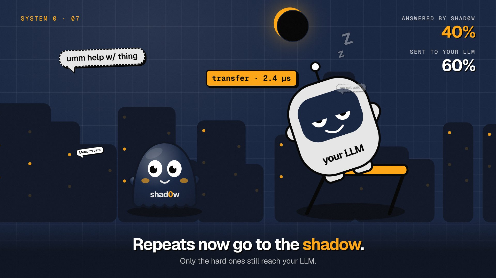

shad0w is your LLM's shadow. It watches your LLM, learns to answer like it, and takes the repeat questions (intents, routing, moderation) in microseconds. Your LLM only gets what shad0w isn't sure about.
pip install "shad0wllm[compile]"
Loading a real 77-intent model…
A real hosted LLM, the official OpenAI client, public datasets. Every number below is rebuilt from a result file.
shad0w runs inside your app. No network hop, no GPU.
of messages answered by shad0w instead of your LLM. On those, it agreed with your LLM 97.2% of the time.
of messages answered by shad0w instead of your LLM. On those, it gave a different answer than your LLM 3.0–6.0% of the time.
teacher: a hosted LLM through the official OpenAI client · agreement re-checked by asking the LLM directly
All benchmarks →A real shad0w that learned 77 banking intents, running in this tab. See what it picks, how sure it is, and whether it answers or asks your LLM.
Loading the model…
77 intents · learned from an open model's answers · certified at α = 5% · open the playground →
shad0w is your LLM's shadow. It watches every answer, learns to answer the same way, and proves where it can. Then most repeat traffic goes to shad0w, and your LLM only gets what shad0w isn't sure of.
Your LLM keeps answering. Its shadow writes down every question and answer.
About 1,000 answers become a tiny model. No labels, no GPU.
On answers it never saw, it finds the confidence line above which it agrees with your LLM.
Above the line, shad0w answers. Below it, your LLM does, and shad0w learns.
In plain words: certified means shad0w was tested on answers it never trained on, and only answers above the confidence where it differs from your LLM on at most α of its answers, checked with 90% confidence. α is the most disagreement you allow: the default 5% means at most 1 in 20. How the guarantee works →
No labels, no GPU, no hyperparameters. shad0w learns from your LLM's own answers, and keeps learning from every answer your LLM gives.
min_rows).auto_train=2000 (or shad0w proxy --auto-train 2000) and it retrains in the background every 2,000 new answers. It is off by default; shad0w train on a schedule works too.The shadow answers before the LLM writes its first token.
time per decision, log scale. shad0w in orange.
A game gives every decision a few milliseconds. We taught shad0w two games from an LLM's answers, then put it where speed decides who wins.
It decides every frame in about 1.5 µs (Node, Apple M5 Pro; your browser is measured live) from a 6 KB table that agrees with its LLM on 99.8% of moves. Add up to six balls.
Play →shad0w, three System One models on an Apple M5 Pro's GPU, and a hosted LLM play the same games at up to 120 moves a second. shad0w scores 28.0 at every speed; the LLM drops from 25.9 to 0.1 at 10 moves a second.
See the race →Wrap your call, or point base_url at the proxy.
import shad0w
intent = shad0w.decision("intent", llm="openai/gpt-6-luna",
options=["refund", "lost_card", "balance", "other"])
intent("my card was stolen").answer # your LLM answers; shad0w logs it
intent.train() # after ~1,000 answers
intent("my card was stolen") # Decision(answer='lost_card', source='table')Async: await intent.adecide(text). Bring your own LLM function: shad0w.Shadow("bundle/", teacher=my_fn).
import { decision } from "shad0wllm";
const intent = await decision("intent", {
options: ["refund", "lost_card", "balance", "other"],
llm: "openai/gpt-6-luna", bundle: "shad0w/intent/bundle" });
const d = await intent.decide("my card was stolen");
// { answer: "lost_card", source: "table", certified: true }Zero dependencies. Node, browsers, Workers, Deno, Bun. Same answers as Python on the same trained shad0w.
# 1. start the proxy (dashboard at http://localhost:8010)
# shad0w proxy --upstream https://api.openai.com/v1 --auto-train 1000
# 2. move base_url. Nothing else changes.
client = OpenAI(base_url="http://localhost:8010/v1")
client.decisions.create(model="gpt-6-luna", input="my card was stolen", questions=[...])
# answers shad0w is sure of come back instantly, same JSON shape;
# the rest go upstream and are logged so shad0w keeps learningWorks for the Decisions API, System One servers and chat completions (mark a call with the X-Shad0w-Question header).
If your LLM picks from a fixed list, shad0w can learn it. If it writes, it can't.
→ lost_card→ team: mobile→ spam: yes→ tool: search→ topic: businessno network→ LLM→ LLM→ LLM→ LLMSemantic cache, embedding router, a fine-tuned head and decision models, held to one test on the same LLM answers.
| method | answered without the LLM @ α = 5% | disagreement with the LLM on those | accuracy vs gold (cascade) | p50 per decision | cost per 1k decisions | needs | guarantee |
|---|---|---|---|---|---|---|---|
| shad0w | 61% | 3.0% | 76.5% | 4.0 µs | $0.204 | your LLM's logged answers | certified ≤ α vs your LLM |
| semantic cache (bge-small, nearest logged answer) | 0% | — | 76.3% | 7.5 ms | $0.520 | embedding model + logged answers | same certifier applied |
| embedding kNN router (bge-small, k=10) | 69% | 2.9% | 76.9% | 7.6 ms | $0.161 | embedding model + logged answers | same certifier applied |
| small fine-tuned head (LR on bge-small) | 75% | 3.4% | 77.1% | 7.2 ms | $0.129 | embedding model + logged answers | same certifier applied |
| exact-match cache | 0% | — | 76.3% | 1.2 µs | $0.520 | logged answers | exact repeats only |
| keep calling the LLM | 0% | 0.0% | 76.3% | — | $0.520 | API or GPU | it is the reference |
| Kev-0.8B decision model (local) | 100% (it replaces your LLM) | 23% vs a hosted LLM | 80.0% | 271 ms | $0 (your hardware) | a GPU/MLX machine, ~1-3 GB | calibrated probabilities, no bound |
| Julia-1 decision model (local) | 100% (it replaces your LLM) | 41% vs a hosted LLM | 61.6% | 11.9 ms | $0 (your hardware) | llama.cpp, a laptop | calibrated probabilities, no bound |
| Laya 421M decision model (local) | 100% (it replaces your LLM) | 58% vs a hosted LLM | 38.0% | 91.6 ms | $0 (your hardware) | a GPU or fast CPU, 0.8 GB | calibrated probabilities, no bound |
| hosted decision model (OpenAI Decisions API, gpt-6-luna) | 100% (it replaces your LLM) | not measured (no API key) | not measured | ~150 ms claimed | $0.030 per 1k | API key | none (probabilities only) |
| hosted decision model (TypeSafe Jev 1.13) | 100% (it replaces your LLM) | not measured (no credits) | not measured | 70–500 ms claimed | $0.0126 per 1k | API key | none (probabilities only) |
Decision models (Kev, Laya, Julia, the Decisions API) replace your LLM instead of shadowing it; they are in the full comparison. An embedding model answers a bit more, but takes milliseconds and over a hundred megabytes. shad0w answers in microseconds from a 1.5 MB file. Full comparison →
We publish these next to the wins.
share of messages shad0w answers (at α = 5%), by how many LLM answers it has seen
Prove it on your own traffic before it answers anything.
Your LLM still answers everything. The dashboard shows what shad0w would have said, and how often it agreed.
shad0w answers a slice of traffic. Spot checks re-ask your LLM in the background.
shad0w answers what it is certified on. It steps back on its own when your options change or traffic drifts.
Watch it learn from your LLM, prove itself, and take over the repeat questions.

No. A cache only answers texts it has seen before. shad0w answers new wordings of a question it has learned, and its guarantee covers new messages that look like your traffic. Exact repeats are free on top.
Before it answers anything, shad0w is tested on answers it never trained on and picks a confidence line. Above it, shad0w differs from your LLM on at most α of what it answers, checked with 90% confidence. α is the most disagreement you allow: the default 5% means at most 1 in 20 answers. In our runs, shad0w actually differed 3.0–6.0% of the time: a 90% promise can miss, so live spot checks keep watching.
About 1,000 logged answers per question to start. More options need more: with 77 intents it answered 60% at 10,000 answers. The share keeps growing as your LLM keeps answering.
Then shad0w is wrong in the same way. The guarantee is agreement with your LLM, not with the truth. For a bound against the truth, certify on a few hundred human-labelled examples instead.
Nothing. It is Apache-2.0 open source. The Python runtime needs only numpy; the JavaScript and C runtimes need nothing. Your data and logs stay on your machine.
Open source, Apache-2.0. CPU, browser, edge.
pip install "shad0wllm[compile]"